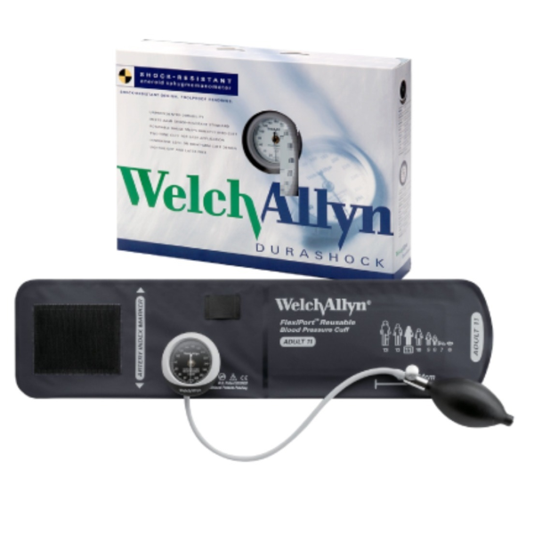
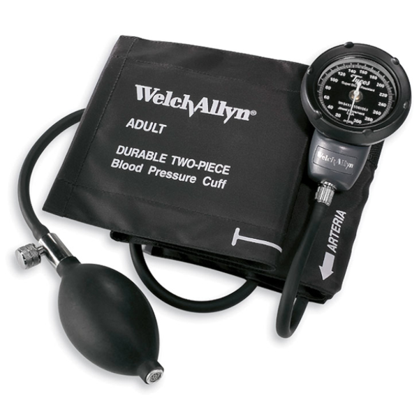
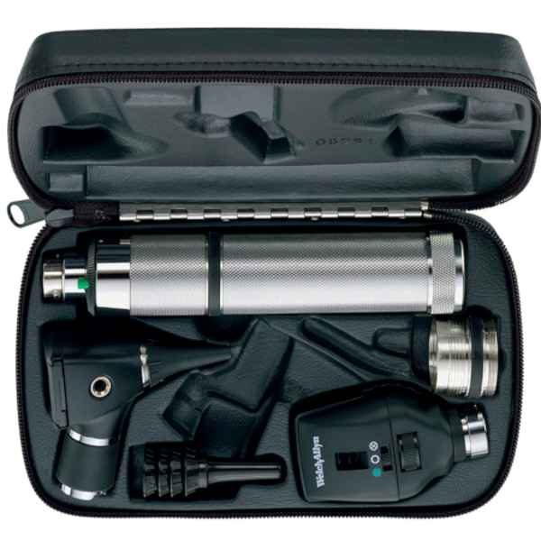
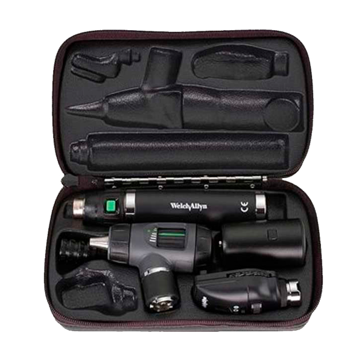

Medicina interna y general

 Cotizar
Cotizar
Baumanómetro WellchAllyn

- Tecnología DuraShock™
- Cuenta con un diseño exclusivo con el manómetro integrado en el brazalete
- El indicador rota 360º para una fácil visualización desde cualquier ángulo
- Carátula grabada con láser para mayor precisión
- Exactitud certificada a +/- 3 mmHg
- Garantía de calibración de 10 años
- Libre de látex
- Resistente a golpes: puede resistir una caída de hasta 76 cm (requisito estándar de la AAMI)
Cotizar
Cotizar

Cotizar
Estuche de diagnóstico WellchAllyn

- Tecnología de iluminación que incluye opciones de LED.
- Seleccione desde mangos de Ion litio, NiCad o C-Cell
- Opciones de estuche rígido o flexible
- Disponibles con luz LED integrada
- Tecnología innovadora con una variedad de opciones para satisfacer sus necesidades
- Diferentes opciones para oftalmoscopios, otoscopios, retinoscopios e iluminador
- Diferentes fuentes de energía pueden ser añadidas
- Disponibles con estuches rígidos o flexibles para para facilitar el transporte
Cotizar
Cotizar